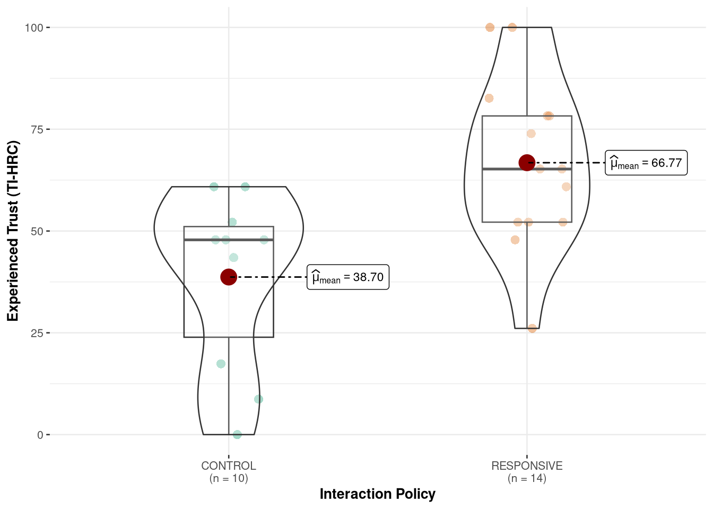
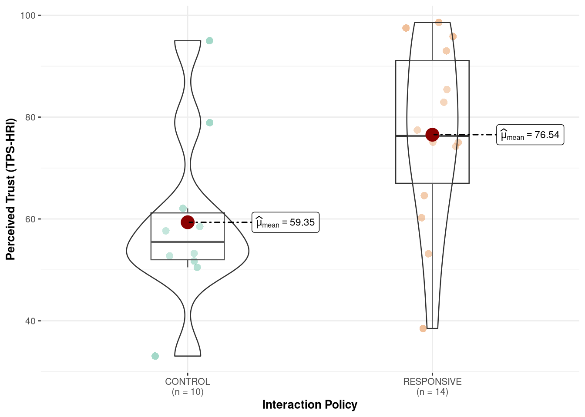

| Characteristic | N | CONTROL N = 131 |
RESPONSIVE N = 161 |
p-value2 |
|---|---|---|---|---|
| Gender | 27 | 0.84 | ||
| Woman | 6 / 13 (46%) | 7 / 14 (50%) | ||
| Man | 7 / 13 (54%) | 7 / 14 (50%) | ||
| Age Group | 27 | 0.35 | ||
| 18-24 | 5 / 13 (38%) | 7 / 14 (50%) | ||
| 25-34 | 4 / 13 (31%) | 2 / 14 (14%) | ||
| 34-44 | 1 / 13 (7.7%) | 4 / 14 (29%) | ||
| 45+ | 3 / 13 (23%) | 1 / 14 (7.1%) | ||
| Program | 25 | >0.99 | ||
| Psychology | 1 / 13 (7.7%) | 1 / 12 (8.3%) | ||
| Engineering | 2 / 13 (15%) | 1 / 12 (8.3%) | ||
| Computer Science | 7 / 13 (54%) | 6 / 12 (50%) | ||
| Earth Sciences | 0 / 13 (0%) | 1 / 12 (8.3%) | ||
| Other | 3 / 13 (23%) | 3 / 12 (25%) | ||
| Experience with Robots | 29 | 7 / 13 (54%) | 4 / 16 (25%) | 0.14 |
| Native English Speaker | 29 | 0.53 | ||
| Native English | 5 / 13 (38%) | 8 / 16 (50%) | ||
| Non-Native English | 8 / 13 (62%) | 8 / 16 (50%) | ||
| NARS Overall | 29 | 38 (8) | 38 (7) | 0.79 |
| Need for Cognition | 29 | 3.62 (0.78) | 3.74 (0.74) | 0.55 |
| Dialogue Viability | 29 | 0.63 | ||
| exclude | 3 / 13 (23%) | 2 / 16 (13%) | ||
| include | 10 / 13 (77%) | 14 / 16 (88%) | ||
| 1 n / N (%); Mean (SD) | ||||
| 2 Pearson’s Chi-squared test; Fisher’s exact test; Wilcoxon rank sum test | ||||
Trust in Autonomous Human–Robot Collaboration: Effects of Responsive Interaction Policies
Abstract
Trust plays a central role in human–robot collaboration, yet its formation is rarely studied under the constraints of fully autonomous interaction. This pilot study examines how interaction policy influences trust during in-person collaboration with a social robot operating without Wizard-of-Oz control or scripted recovery. Participants completed a multi-stage collaborative task with a mobile robot that autonomously managed spoken-language dialogue, affect inference, and task progression. Two interaction policies were compared: a responsive policy, in which the robot proactively adapted its dialogue, assistance, and repair strategies based on user input and inferred interaction state, and a neutral, reactive policy, in which the robot provided only direct, task-relevant responses when explicitly prompted. Responsive interaction was associated with significantly higher post-interaction trust, despite no reliable differences in overall task accuracy. Sensitivity analyses revealed that experienced trust was highly sensitive to communication breakdown, whereas evaluative trust judgments were more robust. When language-mediated interaction collapsed, trust was no longer meaningfully instantiated. These findings suggest that trust formation in human–robot interaction differs under fully autonomous conditions, where communication failures cannot be repaired by human intervention.
1 Introduction
As artificial intelligence (AI) technologies advance, they are increasingly integrated into robotic systems, enabling more adaptive, autonomous, and context-sensitive behaviour in real-world environments. This convergence has accelerated the deployment of robots across safety-critical domains such as manufacturing [1], mining [2], and healthcare [3], where robots are now expected to operate alongside humans rather than in isolation [4], [5]. In these collaborative settings, successful deployment depends not only on technical performance and safety guarantees, but also on whether human users are willing to rely on, communicate with, and coordinate their actions around robotic partners [6], [7]. Trust has therefore emerged as a central determinant of adoption and effective use in human–robot collaboration (HRC) [6], [8]. Insufficient trust can lead to disuse or rejection of automation, while excessive trust risks overreliance and accidents—particularly in environments characterized by uncertainty or incomplete information [9].
In HRC, trust is commonly understood as a willingness to rely on an agent under conditions of uncertainty and risk [10], [11]. This reliance is dynamically calibrated, shaping how closely users monitor a robot, when they intervene, and whether they defer or override its actions [9]. Appropriately calibrated trust supports effective coordination, whereas under-trust may result in disengagement or redundant oversight, and over-trust can lead to inappropriate reliance and unsafe outcomes. These dynamics are especially pronounced in dialogue-driven collaborative tasks, where misunderstandings, delays, or ambiguous responses may directly influence users’ ongoing assessments of a robot’s competence and reliability.
A substantial body of human–robot interaction (HRI) research has examined how robot behaviour influences user trust, perceived reliability, and cooperation across industrial and social contexts [12], [13]. Trust is typically conceptualized as a multidimensional construct encompassing cognitive evaluations of competence, predictability, and reliability, alongside a behavioural willingness to collaborate toward shared goals under conditions of risk or uncertainty [9], [10], [11]. Despite this multidimensional framing, empirical studies have most often operationalized trust using post-interaction self-report questionnaires collected following short, highly controlled, and often scripted interactions. While such measures provide valuable global assessments of user attitudes, they offer limited insight into how trust is negotiated, disrupted, and repaired during ongoing interaction—particularly in autonomous systems where errors and ambiguities are unavoidable [14].
Studying trust as an interactional process therefore requires experimental settings in which users engage with robots that exhibit both adaptive behaviour and realistic system limitations [6]. In such settings, trust is shaped not only by task success but by how robots handle uncertainty, errors, and misalignment during interaction. Fully autonomous systems, where dialogue management and response generation occur without human intervention, provide a critical testbed for examining these dynamics, as they expose users to the same constraints and breakdowns encountered in real-world deployment [6].
In practice, much of the existing HRI trust literature has relied on scripted behaviours, simulated environments, or Wizard-of-Oz paradigms in which a human operator covertly manages the robot’s behaviour [6], [15]. While these approaches are valuable for isolating specific design factors, they obscure the interaction breakdowns and system imperfections that characterize deployed autonomous robots. Limitations such as speech recognition errors, delayed responses, misinterpretations of user intent, and incomplete affect sensing are not peripheral issues but defining features of real-world interaction. These failures are likely to play a decisive role in shaping trust and collaboration, yet remain underrepresented in empirical evaluations [6].
Within HRI, a range of design strategies have been proposed to support appropriate trust calibration during collaboration, including robot appearance [16], transparency cues [17], explanations of system intent, adaptive feedback, and interaction pacing [18]. Many of these approaches aim to help users form accurate expectations about a robot’s capabilities and limitations, particularly in contexts involving uncertainty or partial observability. Among these strategies, adaptive interaction behaviour—how and when a robot responds to user state and task context—has been identified as a particularly influential factor in shaping perceptions of competence, reliability, and collaboration [13].
Recent advances in AI have expanded the range of interaction strategies available to autonomous robotic platforms in practice, enabling systems to move beyond fixed, scripted behaviours toward adaptive interaction policies that respond to user state and task context in real time [19]. Improvements in spoken-language processing, dialogue state tracking, and large language model–based reasoning now allow robots to adjust not only what they say, but when and how assistance is provided during collaboration [20]. In parallel, advances in affect inference from language and interaction cues have made it increasingly feasible for robots to incorporate estimates of user emotional state into interaction management [5], [21]. As a result, responsiveness in contemporary HRI is increasingly understood as a property of an underlying interaction policy, governing how a robot interprets cues, initiates support, and manages uncertainty, rather than as a surface-level social behaviour [12], [13], [22].
From an engineering perspective, responsiveness is defined by an interaction policy rather than a superficial social cue [23]. Proactive assistance based on interaction context—including inferred task progress, uncertainty, and human affective state—differs fundamentally from reactive, request-based behaviour. For example, a responsive robot may offer clarification or encouragement when confusion, hesitation, or frustration is inferred rather than waiting for an explicit request for help [22]. Implementing such policies requires robots to manage spoken-language dialogue, track interaction and user state over time, and coordinate verbal and nonverbal responses in real time, all while operating under noise, latency, and sensing uncertainty [6].
The present work addresses these gaps through a pilot study examining trust and collaboration during in-person interaction with a fully autonomous social robot. Participants collaborated with one of two versions of the same robot platform during a dialogue-driven puzzle task requiring shared problem solving. In both conditions, all interaction management, including speech recognition, dialogue state tracking, task progression, and response generation, was handled and logged autonomously by a centralized dialogue agent without human intervention. In the responsive condition, the robot employed a proactive, affect-aware interaction policy, adapting its assistance based on conversational cues and inferred user affect (e.g., frustration or engagement). In the neutral condition, the robot followed a reactive policy, providing basic guidance and otherwise assistance only when explicitly requested.
This pilot study had three primary objectives: (1) to design and evaluate the feasibility of an autonomous spoken-language interaction system with affect-responsive behaviour on a mobile robot platform; (2) to assess whether a responsive interaction policy influences post-interaction trust and collaborative experience under realistic autonomous conditions; and (3) to explore how behavioural and interaction-level indicators align with subjective trust evaluations. Rather than optimizing for flawless interaction, the system was intentionally designed to reflect the capabilities and limitations of contemporary social robots, allowing interaction breakdowns to surface naturally.
By combining post-interaction trust measures with task-level and behavioural observations, this study aims to contribute empirical evidence on how trust in human–robot collaboration emerges and is enacted during fully autonomous interaction. The findings are intended to inform the design of a larger subsequent study by evaluating feasibility and identifying technical, interactional, and methodological challenges that must be addressed when evaluating affect-responsive robots in real-world contexts.
2 Methods
This study employed a between-subjects experimental design to examine how robot interaction policy influences trust and collaboration during fully autonomous, in-person human–robot interaction. The sole experimental factor was the robot’s interaction policy, with participants randomly assigned to interact with either a responsive or neutral version of the same robot system.
Throughout this paper, references to “the robot” denote a fully autonomous interactive system comprising the Misty-II hardware platform and an integrated offboard software pipeline. Spoken-language understanding, dialogue management, task logic, and interaction policy execution were handled on an external edge device which interfaced with the robot via application programming interfaces. The Misty-II platform was responsible for audio capture, speech synthesis, and the execution of embodied behaviours including facial expressions, body movement, and LED signalling. Despite this distributed execution, all interaction decisions were generated autonomously by a centralized dialogue agent responsible for coordinating spoken-language understanding, task state, and verbal and nonverbal behaviour based on the interaction policy, without human intervention. More detail on the robot platform and software architecture is provided in Appendix A.
2.1 Interaction Policies
Across both tasks, interaction behaviour was governed by one of two interaction policies that differed in how the robot was intended to initiate, framed, and adapt its contributions during collaboration. Under both policies, the robot continuously monitored interaction timing and issued brief check-ins following extended periods of participant silence in order to preserve interaction continuity. In the neutral, reactive condition, these check-ins were minimal and task-focused, serving only to signal availability (e.g., indicating readiness to answer questions) without providing guidance, encouragement, or additional framing (e.g., “I’m ready for your next question.”).
In contrast, under the responsive policy, the robot’s utterances were affectively framed and context-sensitive. In addition to answering questions, the robot proactively adapted its dialogue, assistance, and repair strategies based on inferred interaction state, such as hesitation, frustration, or apparent difficulty. This included acknowledging task difficulty, offering encouragement, and proposing collaborative reasoning (e.g., “I can tell you’re frustrated, don’t worry! we can reason through this together”), rather than waiting for an explicit request for help. Beyond differences in check-in style, the responsive robot also initiated guidance or clarification when interaction stagnated, whereas the neutral robot limited its contributions to basic task guidance and direct queries.
Both conditions operated fully autonomously, without human intervention or scripted recovery, and used the same underlying task logic and sensing infrastructure.
2.2 Collaborative Task Design
The task structure was modelled after [24] and designed to elicit collaboration under two distinct dependency conditions: enforced collaboration, in which successful task completion required the robot’s involvement, and optional collaboration, in which participants could choose whether and how to engage the robot. To operationalize these conditions, participants completed an immersive, narrative-driven puzzle game consisting of five sequential stages and two timed reasoning tasks. The game positioned participants as investigators searching for a missing robot colleague, with the Misty-II robot serving as a diegetic guide and collaborative partner throughout the interaction. The full session lasted approximately 25 minutes.
Interactions took place in a shared physical workspace that included the Misty-II social robot and a participant-facing computer interface [25]. The interface was used to display task materials, collect participant responses, and support progression through the game (see Figure 2). Importantly, the interface did not function as a control mechanism for the robot. Instead, the robot autonomously monitored task progression and participant inputs via the interface and adapted its dialogue and behaviour accordingly.

The interaction began with a brief greeting phase, during which the robot introduced itself and engaged in rapport-building dialogue. This was followed by a mission briefing in which the robot explained the narrative context and overall objectives. Participants then completed two core task stages: a robot-dependent collaborative reasoning task, in which the robot’s participation was required to solve the problem, and a more open-ended problem-solving task in which robot assistance was optional. The interaction concluded with a wrap-up stage in which the robot provided closing feedback and formally ended the session.
Participants advanced between stages using the interface, either in response to the robot’s prompts or at their own discretion. All spoken dialogue and interaction events were managed autonomously by the robot and logged automatically for analysis.
2.2.1 Task 1: Robot-Dependent Collaborative Reasoning
In the first task, participants were asked to identify a perpetrator from a 6 × 4 grid of 24 ‘suspects’ by asking the robot a series of yes/no questions about the suspect’s features (e.g., “was the suspect wearing a hat?”). The grid was displayed on the interface, while questions were posed verbally.

The robot possessed the ground-truth information necessary to answer each question correctly. Successful task completion was therefore dependent on interaction with the robot, creating an enforced collaborative dynamic. Participants were required to coordinate a questioning strategy that progressively eliminated candidates based on shared features, narrowing the search space within a five-minute time limit. Efficient performance depended on selecting informative questions (e.g., features that divided the remaining candidates), tracking eliminations, and adapting subsequent questions based on prior answers.
This structure made the task sensitive to interaction quality. Inefficient questioning, repeated queries, or uncertainty about next steps could slow progress and increase cognitive load, whereas effective coordination supported rapid elimination and convergence on a solution. The structured nature of the task ensured consistent interaction demands across participants and conditions, while still allowing meaningful variation in collaboration style.
2.2.2 Task 2: Open-Ended Collaborative Problem Solving
The second task involved a more open-ended reasoning challenge. Participants were presented with multiple technical logs through a simulated terminal interface that could be used to infer the location of the missing robot (see Figure 3). The task was intentionally cryptic and difficult to solve within the allotted ten minutes without synthesizing information across multiple sources.

The logs contained partial and indirect clues related to the robot’s activity, such as wireless connectivity records, sensor readings, and timestamped system events. Solving the task required participants to identify which logs were relevant, extract spatial or temporal cues, and integrate these signals to progressively narrow down plausible locations. As in Task 1, successful performance depended on managing uncertainty and iteratively refining hypotheses rather than on recognizing a single explicit cue.
Unlike Task 1, the robot did not have access to ground-truth information or the contents of the logs. Its assistance was therefore limited to general reasoning support derived from its language model, such as explaining how to interpret log formats, suggesting strategies for cross-referencing timestamps, or prompting participants to reconcile inconsistencies across sources. Participants could complete the task independently or solicit assistance from the robot at their discretion [26], allowing collaboration to emerge voluntarily rather than being enforced by task structure.
2.3 Study Protocol
Participants signed up for the study and completed a pre-session questionnaire before their in-person session via Qualtrics. The pre-session questionnaire colleced basic demographics information and assessed baseline characteristics, including the Negative Attitudes Toward Robots Scale (NARS) and the short form of the Need for Cognition scale (NFC-s) [27], [28]. These measures were used to capture individual differences that may moderate responses to robot interaction.
In-person sessions were conducted in a quiet, private room at Laurentian University between November and December 2025. Prior to each session, the robot’s interaction policy was configured to the assigned experimental condition.
Upon arrival, participants were greeted by the researcher, provided with a brief overview of the session, and given instructions for effective communication with the robot, including waiting for a visual indicator before speaking. Once participants indicated readiness, the researcher exited the room, leaving the participant and robot to complete the interaction without human presence or observation. Participants initiated the interaction by clicking a start button on the interface and were informed that they could terminate the session at any time without penalty.
Following task completion, participants completed a 21-item post-interaction questionnaire assessing trust. Participants then engaged in a brief debrief with the researcher and were awarded a $15 gift card. Total session duration averaged approximately 30 minutes.
2.4 Measures
A combination of self-report and objective measures was used to assess trust, engagement, and task performance.
2.4.1 Self-Report Measures
Participants completed a pre-session questionnaire assessing baseline characteristics, including the Negative Attitudes Toward Robots Scale (NARS) and the short form of the Need for Cognition scale (NFC-s) [27], [28]. These measures were used to capture individual differences that may moderate responses to robot interaction.
Trust was assessed using two established self-report instruments commonly used in human–robot interaction research: the Trust Perception Scale–HRI (TPS-HRI) and the Trust in Industrial Human–Robot Collaboration scale (TI-HRC) [29], [30]. Both measures were adapted to reflect the specific dialogue-driven task context and interaction modality of the present study, while preserving the original constructs and response intent of each scale. 9 items were retained from the TI-HRC and 12 items from the TPS-HRI. Item wording was modified to reference the robot’s behaviour during the dialogue-driven collaborative tasks, and response formats were adjusted to ensure interpretability for participants without prior robotics experience (see Appendix B for a full item list).
Together, these instruments capture complementary dimensions of trust, including perceived reliability, task competence, and affective comfort. However, they differ in their conceptual emphasis: the TPS-HRI primarily operationalizes trust as a reflective judgement of system performance (i.e., “What percent of the time was the robot reliable”), whereas the TI-HRC scale emphasizes trust as an experienced, embodied response arising during interaction (i.e., “The way the robot moved made me feel uneasy”). Despite this complementarity, both measures rely on retrospective self-report and may be insensitive to moment-to-moment trust dynamics as collaboration unfolds. For this reason, questionnaire data were interpreted alongside behavioural and interaction-level measures.
2.4.2 Objective Measures
Objective task metrics included task completion, task accuracy, time to completion, and the number of assistance requests made to the robot. behavioural engagement metrics were derived from interaction logs and manually coded dialogue transcripts, including number of dialogue turns, frequency of communication breakdowns, response timing, and task-relevant robot contributions.
2.5 Participants
A total of 29 participants were recruited from the Laurentian University community via word of mouth and the SONA recruitment system. Eligibility criteria required being 18 years or older, fluent in spoken and written English, and having normal or corrected-to-normal hearing and vision. Participants received a $15 gift card as compensation for their time; some students additionally received partial credit for participating depending on their program of study. All procedures were approved by the Laurentian University Research Ethics Board (REB #6021966).
Although English fluency was an eligibility requirement, in-person observation during data collection revealed meaningful variability in participants’ functional spoken-language proficiency. The researcher therefore documented observed language proficiency and monitored interaction quality during each session in anticipation of potential speech-based system limitations.
Subsequent review of interaction transcripts and system logs indicated that a subset of sessions exhibited severe and sustained communication failure, characterized by fragmented or unintelligible automatic speech recognition (ASR) output and stalled dialogue. In these sessions, the robot was unable to extract sufficient linguistic content to maintain conversation, respond meaningfully to participant input, or support task progression. These interaction failures are described in detail in the Analytic Strategy and Results sections.
2.5.1 Randomization Check
Across analyses, participants in the responsive and control conditions were comparable with respect to demographic characteristics, prior experience with robots, and baseline attitudes toward robots, including Negative Attitudes Toward Robots (NARS) and Need for Cognition scores (see Table 1) [28]. These patterns were consistent across both eligible and full samples, indicating successful random assignment.
2.6 Analytic Strategy
Because the study relied fundamentally on spoken-language collaboration, analyses were structured to explicitly account for interaction viability. Sessions were classified as non-viable when severe communication breakdown prevented sustained dialogue between the participant and the robot, rendering the experimental manipulation inoperative.
Communication viability was operationalized using a dialogue-level metric derived from manual coding of system logs. For each session, the proportion of dialogue turns affected by speech-recognition failure (i.e., fragmented or unintelligible utterances) was computed. Sessions in which more than 60% of dialogue turns were affected were classified as non-viable, reflecting cases in which spoken-language interaction could not be meaningfully sustained. This criterion closely aligned with sessions independently flagged by the researcher during administration.
Analyses were conducted using three complementary approaches. Primary analyses were performed on an eligible sample excluding non-viable sessions, reflecting interactions in which the spoken-language protocol and experimental manipulation operated as intended. Full-sample analyses including all sessions were conducted as sensitivity checks. Finally, mechanism-focused analyses compared viable and non-viable sessions on interaction-process metrics (e.g., ASR failure rates, dialogue turn completion, task abandonment) to characterize how severe communication breakdown alters interaction dynamics. Trust measures from non-viable sessions were not interpreted as valid estimates of human–robot trust under functional interaction, as the robot was unable to sustain dialogue or collaborative behavior in these cases.
All analyses were conducted using R (version 4.5.1) within the Quarto framework. Data manipulation and visualization utilized the tidyverse suite of packages [31], with mixed-effects models fitted using the lme4 and lmerTest packages [32], [33] while Bayesian hierarchical models were fitted using the brms package [34]. Summary tables were generated using the gtsummary package [35]. All code used for data processing and analysis is available at: GitHub Repository
3 Results
Of the 29 completed sessions, 5 met the pre-specified criterion for non-viable interaction due to severe and persistent communication failure. These sessions were characterized by high rates of ASR failure, incomplete dialogue sequences, and skipped task stages.
Primary results are therefore reported for the eligible sample (n = 24), with full-sample and mechanism-focused analyses reported as sensitivity and exploratory analyses, respectively.
3.1 Primary Analysis: Eligible Sample
Simple descriptive comparisons of post-interaction trust measures indicated higher trust ratings in the responsive condition relative to the control condition across both trust scales (see Table 2). As indicated in Figure 4, average post-interaction scores on the Trust in Industrial Human–Robot Collaboration scale (TI-HRC) differed by approximately 26 points (Likert 1-5 converted to 0-100 scale for easier comparison across scales), while differences on the Trust Perception Scale–HRI (TPS-HRI) were approximately 15 points higher in the responsive condition compared to the control (Figure 5).
Analysis of dialogue interaction patterns confirmed successful manipulation of the interaction policies. Manual coding of dialogue transcripts revealed substantial and significant differences in robot behaviour across conditions (see Table 2). In the responsive condition, the robot employed encouragement in 36% of dialogue turns compared to 0% in the control condition (p < .001), expressed empathy or acknowledged participant affect in 13% of turns versus 0% in the control (p < .001), and used collaborative language (e.g., “we,” “let’s”) in 42% of turns compared to 5% in control (p < .001). Interestingly, while both conditions included proactive check-ins following periods of participant silence, the control robot engaged in such check-ins at a higher rate (21% vs. 13% of turns, p = .033), consistent with its reactive policy that limited proactive assistance to structured silence monitoring. Critically, proportions of communication breakdown did not differ between conditions (25% vs. 22%, p = .70), indicating that interaction policy did not systematically impact technical speech recognition viability among eligible participants. Participants in the responsive condition also exhibited higher levels of AI-detected engagement during interaction, with an average of 3.50 engaged responses (SD = 1.95) compared to 2.00 (SD = 2.21) in the control condition. Consistent with these dialogue differences, interactions in the responsive condition were characterized by longer session durations and slower robot response times, reflecting the additional dialogue and affective support behaviours. Together, these patterns confirm that the responsive robot implemented affect-adaptive, proactive support behaviours while maintaining comparable interaction viability to the neutral control condition.

Importantly, overall task accuracy did not differ significantly between conditions (detailed task performance results are reported below), suggesting that observed differences in trust were not driven by differential task success but rather by the quality of the interaction process itself.

| Characteristic | CONTROL N = 101 |
RESPONSIVE N = 141 |
p-value2 |
|---|---|---|---|
| Trust in Industrial HRI Collaboration | 39 (22) | 67 (21) | 0.004 |
| Subscales | |||
| Reliability subscale | 40 (24) | 65 (18) | 0.012 |
| Trust Perception subscale | 42 (23) | 60 (22) | 0.075 |
| Affective Trust subscale | 50 (31) | 79 (22) | 0.018 |
| Trust Perception Scale HRI | 59 (17) | 77 (18) | 0.022 |
| Overall Task Accuracy | 0.60 (0.21) | 0.66 (0.23) | 0.47 |
| Objective Measures | |||
| Dialogue Turns | 34 (9) | 33 (5) | 0.45 |
| Avg Session Duration (mins) | 13.24 (3.06) | 15.26 (2.12) | 0.084 |
| Avg Robot Response Time (ms) | 14.37 (3.76) | 17.24 (2.52) | <0.001 |
| Silent Periods | 5.60 (1.96) | 4.71 (2.05) | 0.29 |
| Engaged Responses | 2.00 (2.21) | 3.50 (1.95) | 0.040 |
| Frustrated Responses | 0.60 (0.70) | 0.93 (1.21) | 0.68 |
| 1 Mean (SD) | |||
| 2 Wilcoxon rank sum test; Wilcoxon rank sum exact test | |||
Beyond descriptive comparisons, hierarchical models were fitted to evaluate the robustness of interaction policy effects while controlling for baseline covariates and accounting for measurement structure.
3.2 Hierarchical Models
To evaluate the robustness of interaction policy effects while controlling for baseline covariates, mixed-effects models were fitted using both frequentist and Bayesian estimation approaches. Frequentist models provided hypothesis tests against null effects, while Bayesian models enabled direct quantification of uncertainty and facilitated evaluation across varying levels of communication viability. All models included interaction policy (responsive vs. control) as the primary fixed effect, with baseline negative attitudes toward robots (NARS) and native English fluency as covariates. Random intercepts for sessions and trust items accounted for repeated measurement structure. Model building proceeded by comparing a baseline model containing interaction policy alone against models incorporating theoretically motivated covariates. Adding NARS scores significantly improved model fit (χ² = 4.82, p = .028), whereas prior experience with robots did not. Native English fluency did not significantly improve model fit but was retained due to its relevance for spoken-language interaction viability. Bayesian models used weakly informative priors and showed satisfactory convergence across all analyses (R̂ ≤ 1.01; effective sample sizes > 1000).
3.2.1 Primary Analysis: Eligible Sample (n = 24)
Frequentist linear mixed-effects models revealed consistent positive effects of responsive interaction on both trust measures. For experienced trust (TI-HRC), participants who interacted with the responsive robot reported significantly higher post-interaction trust than those in the control condition (β = 16.28, SE = 5.14, t = 3.17, p = .005). Higher baseline negative attitudes toward robots were associated with lower trust scores (β = −7.43, SE = 2.81, p = .016), while native English fluency was not significantly associated with trust. Inclusion of random intercepts for individual trust items significantly improved model fit, indicating meaningful item-level variability beyond session-level differences. For perceived trust (TPS-HRI), a comparable pattern emerged, with responsive interaction associated with higher trust scores (β = 14.17, SE = 6.50, t = 2.00, p = .046). However, random intercepts for trust items did not improve model fit for this scale, likely reflecting differences in scale format and response interface: TPS-HRI was administered using a continuous slider input via touchpad, whereas TI-HRC employed discrete Likert-style response options. The slider-based interface may have reduced response precision and item-level variability, though meaningful between-condition differences remained detectable at the aggregate level.
Bayesian estimation converged on similar effect magnitudes with high posterior certainty. For TI-HRC, the responsive condition showed a posterior median effect of β = 14.86 (95% credible interval [7.20, 22.09]), with near-unity probability of a positive effect. For TPS-HRI, the posterior median was β = 12.73 (95% credible interval [2.93, 22.17]), with posterior probability exceeding 99% that the effect was positive. Baseline NARS showed credible negative associations with both outcomes, while native English fluency showed negative associations that were credible for TPS-HRI but uncertain for TI-HRC. Model fit was substantial for TPS-HRI (conditional R² = 0.64) and moderate for TI-HRC (conditional R² = 0.42), with fixed effects explaining 16% and 21% of variance, respectively. The smaller item-level variance for TI-HRC suggests greater coherence among affective trust items under functional interaction conditions.
3.2.2 Sensitivity Analysis: Full Sample (n = 29)
To assess robustness, Bayesian models were refitted including all sessions regardless of communication viability. The responsive interaction effect remained positive for both trust measures but showed substantial attenuation compared to the eligible sample. For TPS-HRI, the posterior median effect was β = 7.04 (95% credible interval [−1.83, 15.67]). Although uncertainty increased and the credible interval included zero, the posterior probability of a positive effect remained high (>94%). Model fit decreased relative to the eligible sample (conditional R² = 0.44), indicating increased unexplained variability when sessions with severe communication breakdown were included. For TI-HRC, attenuation was more pronounced. The posterior median effect decreased to β = 7.17 (95% credible interval [−1.97, 16.70]), with reduced probability of a large effect. Model fit remained moderate (conditional R² = 0.60), but residual variance increased, consistent with the inclusion of interactions in which collaborative behaviour could not be sustained. These results indicate that experienced trust is particularly sensitive to interaction breakdown, and that trust ratings obtained under non-functional interaction conditions do not reflect graded variation in collaborative experience but rather reflect the collapse of the interaction itself.
3.2.3 Mechanism Analysis: Communication Breakdown (n=29)
To examine whether communication quality moderated the effect of interaction policy, Bayesian models were fitted in the full sample with proportional communication breakdown included as an interaction term. For TPS-HRI, the interaction between policy and communication breakdown was weak and centered near zero (posterior median β = −1.14, 95% credible interval [−18.87, 16.28]), with only 55% probability of being negative and 50% probability of being significant. This broad, unstable posterior distribution suggests that evaluative trust judgments were relatively insensitive to graded variation in communication quality once a basic threshold of viability was established. In contrast, TI-HRC showed a more consistent pattern. The interaction term showed a negative tendency (posterior median β = −5.97, 95% credible interval [−23.01, 10.92]), with 76% probability of being negative, 71% probability of being significant, and 45% probability of being large. While responsive behaviour was associated with higher experienced trust under low levels of breakdown, this advantage diminished as communication failures accumulated. This differential sensitivity suggests that experienced trust depends critically on the robot’s sustained ability to engage in responsive interaction, whereas evaluative trust judgments may rely more on discrete moments of successful collaboration that can occur even within partially degraded interactions.
| Characteristic | CONTROL N = 101 |
RESPONSIVE N = 141 |
p-value2 |
|---|---|---|---|
| Objective Measures | |||
| Dialogue Turns | 34 (9) | 33 (5) | 0.45 |
| Avg Session Duration (mins) | 13.24 (3.06) | 15.26 (2.12) | 0.084 |
| Avg Robot Response Time (ms) | 14.37 (3.76) | 17.24 (2.52) | <0.001 |
| Silent Periods | 5.60 (1.96) | 4.71 (2.05) | 0.29 |
| Engaged Responses | 2.00 (2.21) | 3.50 (1.95) | 0.040 |
| Frustrated Responses | 0.60 (0.70) | 0.93 (1.21) | 0.68 |
| % of Dialogue Turns Characterized by... | |||
| Communication Breakdowns | 0.25 (0.17) | 0.22 (0.16) | 0.70 |
| Human Reasoning | 0.26 (0.12) | 0.35 (0.16) | 0.21 |
| Robot Reasoning | 0.12 (0.07) | 0.37 (0.14) | <0.001 |
| Robot Helpful Guidance | 0.68 (0.08) | 0.84 (0.08) | <0.001 |
| Robot Unhelpful Contributions | 0.08 (0.04) | 0.02 (0.03) | 0.003 |
| Robot Encouragement | 0.00 (0.00) | 0.36 (0.11) | <0.001 |
| Robot Empathy Expression | 0.00 (0.00) | 0.13 (0.09) | <0.001 |
| Robot Collaborative Language | 0.05 (0.05) | 0.42 (0.16) | <0.001 |
| Robot Proactive Check-ins | 0.21 (0.08) | 0.13 (0.08) | 0.033 |
| 1 Mean (SD) | |||
| 2 Wilcoxon rank sum test; Wilcoxon rank sum exact test | |||
3.3 Task performance
Overall task accuracy did not differ significantly between conditions (60% vs. 66%, p = .534), nor did performance on individual task components reach statistical significance (see Table 4). However, a notable pattern emerged when examining task structure. For the suspect identification task (Task 1), which required robot collaboration to complete accurately, participants in the responsive condition achieved more than double the accuracy of those in the control condition (64% vs. 30%, p = .106), representing a large effect that approached but did not reach conventional significance thresholds given the pilot sample size. In contrast, performance on the location identification task components (building, zone, and floor identification), where robot assistance was optional, showed no consistent directional advantage for either condition. These patterns suggest that responsive robot behaviour may particularly benefit collaborative performance on tasks requiring sustained interaction and mutual grounding, though larger samples are needed to establish statistical reliability. Critically, the absence of significant overall accuracy differences indicates that observed trust differences cannot be attributed simply to differential task success, but rather reflect distinct responses to the interaction process itself.
| Characteristic | CONTROL N = 101 |
RESPONSIVE N = 141 |
p-value2 |
|---|---|---|---|
| % Task Accuracy | 0.60 (0.21) | 0.66 (0.23) | 0.47 |
| Suspect ID Accuracy (robot dependent) | 3 / 10 (30%) | 9 / 14 (64%) | 0.10 |
| Building ID Accuracy | 7 / 10 (70%) | 11 / 14 (79%) | 0.67 |
| Zone ID Accuracy | 5 / 10 (50%) | 4 / 14 (29%) | 0.40 |
| Floor ID Accuracy | 7 / 10 (70%) | 13 / 14 (93%) | 0.27 |
| 1 Mean (SD); n / N (%) | |||
| 2 Wilcoxon rank sum test; Pearson’s Chi-squared test; Fisher’s exact test | |||
3.4 Individual differences and correlational patterns
Correlational analyses revealed patterns consistent with the interpretation that trust was shaped by interaction quality rather than individual predispositions or task outcomes. As expected, higher Need for Cognition (NFC) scores were negatively associated with baseline Negative Attitudes Towards Robots (NARS; r = −.48, p = .01), indicating that individuals who enjoy effortful thinking tend to hold more positive attitudes toward robots prior to interaction. However, neither NFC nor NARS showed significant associations with post-interaction trust outcomes (r = −.17 to −.33, p > .11), suggesting that the impact of responsive robot behaviour was relatively independent of participants’ baseline dispositions toward robots or cognitive engagement preferences.
Consistent with the experimental manipulation, specific robot dialogue behaviours showed substantial correlations with trust outcomes. Robot empathy expression—quantified as the proportion of dialogue turns in which the robot acknowledged participant affect or expressed understanding—was strongly correlated with both experienced trust (r = .53, p = .008) and perceived trust (r = .65, p = .001). Similarly, robot use of collaborative language (e.g., “we,” “let’s”) was positively associated with experienced trust (r = .50, p = .012), as was robot encouragement (experienced trust: r = .45, p = .027; perceived trust: r = .42, p = .040). These associations provide direct evidence that the specific affective and collaborative behaviours implemented in the responsive condition were linked to participants’ trust evaluations beyond simple condition assignment.
Participant engagement during interaction, operationalized as the frequency of AI-detected positive affective responses, was positively correlated with perceived trust (r = .52, p = .009) and showed a trending association with experienced trust (r = .30, p = .156). Engaged responses were also associated with longer interaction duration (r = .54, p = .007), greater use of collaborative language by the robot (r = .50, p = .013), and fewer communication breakdowns (r = −.49, p = .016). This pattern suggests that responsive robot behaviour may have fostered a reciprocal dynamic in which robot affective adaptation elicited participant engagement, which in turn supported smoother interaction and higher trust.
Notably, objective task performance showed no significant association with either trust measure (suspect accuracy: r = .18–.20, p > .35; overall accuracy: r = −.05 to .19, p > .37). This dissociation between task outcomes and trust ratings indicates that participants’ trust judgments reflected the quality and affective tone of the interaction process rather than instrumental success on the collaborative tasks. Task performance was not included as a covariate in primary models to avoid conditioning on a potential mediator of interaction policy effects.
4 Discussion
This study examined how a responsive interaction policy can influence trust during fully autonomous, spoken-language human–robot collaboration. Unlike much prior work in HRI trust research, all dialogue management, affect inference, task progression, and response generation in the present system were executed autonomously and in real time, without Wizard-of-Oz control, scripted recovery, or human intervention. As a result, participants were exposed not only to adaptive interaction behaviour, but also to the unavoidable limitations, delays, and failures characteristic of deployed autonomous systems.
Across analytic approaches, the responsive interaction policy was consistently associated with higher post-interaction trust compared to a neutral, reactive control policy when interaction functioned as intended. Crucially, these trust differences emerged without reliable differences in overall task accuracy, indicating that trust was shaped by the interaction process itself rather than by instrumental task success–despite participants learning whether they were correct or not during wrapup. This dissociation was particularly clear in the robot-dependent task, where responsive behaviour showed a large (though underpowered) advantage in accuracy, and in the open-ended task, where trust varied independently of performance.
The results further suggest that autonomous interactions are critical to learning how trust is formed and evaluated. Sensitivity and mechanism analyses showed that task-oriented trust judgments (e.g., perceived reliability) were relatively robust to moderate communication degradation, whereas experienced trust, capturing affective comfort, engagement, and embodied collaboration, was highly sensitive to interaction-level failures. As communication breakdown accumulated, the trust advantage conferred by responsive behaviour diminished, suggesting that affect-adaptive policies require a minimum threshold of interaction viability to operate effectively.
Importantly, communication failure did not merely reduce trust uniformly. In sessions characterized by severe breakdown, the responsive robot continued to generate proactive assistance, encouragement, and meta-communication aimed at repairing the interaction. However, when spoken-language grounding could not be re-established, these behaviours may have increased participant confusion and cognitive distress. In contrast, the neutral robot’s reactive policy resulted in fewer unsolicited interventions, which—while less supportive under functional conditions—reduced interaction complexity when collaboration was no longer viable. Under these conditions, trust ratings no longer systematically reflected the intended policy manipulation.
This pattern highlights a key insight specific to autonomous human–robot interaction: when language-mediated collaboration collapses, higher-level constructs such as trust are not simply attenuated, but may cease to be meaningfully instantiated [9], [36]. In such cases, trust measures may not reflect calibrated judgments of reliability or competence, but rather the breakdown of the interaction itself. This distinction is often obscured in scripted or Wizard-of-Oz paradigms, where failures can be covertly repaired and autonomy constraints are masked.
The present findings therefore support a process-oriented view of examining trust in autonomous HRI. Trust emerges not only from what a robot does, but from how it manages uncertainty, error, and interactional misalignment without human intervention. Responsive interaction policies can enhance trust under viable conditions, but they also amplify the consequences of failure when the system lacks sufficient grounding to adapt effectively.
5 Limitations
Several limitations should be considered when interpreting the present findings.
This study was conducted as a pilot with a modest sample size, which limits statistical power for detecting interaction effects involving task structure, communication quality, and individual differences. Although effect sizes were often large and consistent across analytic approaches, uncertainty remains high. The primary aim of this work was therefore not definitive hypothesis testing, but feasibility assessment and mechanism exploration under fully autonomous conditions. In this respect, the study successfully identified both promising effects and critical boundary conditions for trust formation.
Spoken-language interaction viability emerged as a central constraint of fully autonomous collaboration, and one that revealed an important direction for future research. Although English fluency was an eligibility requirement, substantial variability in functional spoken-language proficiency was observed during in-person sessions. In a subset of interactions, persistent speech recognition failure prevented the experimental manipulation from operating as intended, leading to exclusion from primary analyses on methodological grounds. Rather than reflecting a shortcoming of the experimental design, these cases highlight a fundamental challenge for autonomous spoken-language HRI: trust and collaboration presuppose a minimum level of linguistic grounding, and when that grounding fails, higher-level interaction constructs are no longer meaningfully instantiated.
The visibility of this constraint is itself a consequence of autonomy. In scripted or Wizard-of-Oz paradigms, language breakdown can be covertly repaired or masked by human intervention. In fully autonomous systems, communication viability becomes an explicit property of the interaction that must be detected, managed, and responded to by the robot itself. This points to a clear research direction focused on interaction policies that can recognize emerging language mismatch and adapt accordingly, rather than assuming linguistic competence as a fixed prerequisite.
Natural language understanding was also constrained by the task-specific policy design used in the robot-dependent task. Fixed mappings between participant questions and predefined task features meant that semantically valid but unexpected phrasing, synonym use, or multi-attribute queries occasionally led to misinterpretation or incorrect responses (e.g., treating “orange hair” as distinct from the ground-truth feature “red”). These failures reflect limitations in prompt design and NLU robustness rather than participant reasoning, and likely contributed to some interaction breakdowns.
Measurement-related factors may have introduced additional noise. One trust instrument relied on continuous slider-based responses administered via a laptop touchpad, whereas the other used discrete, clickable Likert-style responses. Touchpad-based slider interaction can be awkward and imprecise for some users, which may have attenuated effects on the continuous scale relative to the Likert-based measure.
Finally, affect inference in the deployed system relied primarily on speech-based signals and conversational context. This design choice prioritized real-time stability and robustness under autonomous constraints, but necessarily limited the richness of affect sensing. Incorporating facial expression or prosodic features could improve responsiveness, though such approaches introduce additional latency, orchestration complexity, and failure modes that were beyond the scope of this pilot study.
6 Conclusion and Future Work
This pilot study demonstrates that affect-responsive interaction policies can meaningfully increase trust in fully autonomous, in-person human–robot collaboration, even under realistic conditions that include latency, misrecognition, and interaction breakdown. Trust differences emerged independently of task success, underscoring the central role of interaction quality and affective responsiveness in shaping collaborative experience.
At the same time, the results identify clear boundary conditions for trust evaluation in spoken-language HRI. When communication viability collapses, trust is not merely reduced—it becomes undefined. Recognizing and modeling this distinction is essential for both experimental design and the deployment of autonomous social robots in real-world settings.
An important direction for future work concerns adaptive language management under autonomous conditions. The present findings indicate that communication viability constitutes a hard boundary condition for trust formation in spoken-language HRI. While interaction policies could be improved to better recognize early signs of language mismatch—such as repeated clarification requests, fragmented utterances, or prolonged turn failures—more ambitious approaches could involve explicit modeling of language proficiency and accent-related variability.
One possible extension would involve a modeling approach in which lightweight classifiers estimate the likelihood of a language barrier based on acoustic features (e.g., accent, speech rate, phoneme-level uncertainty), dialogue-level signals (e.g., repeated speech recognition failures, repair loops), and interaction dynamics. These estimates could inform downstream interaction policy decisions, such as simplifying linguistic structure, slowing response pacing, increasing redundancy, switching to more constrained phrasing, or offering alternative interaction strategies.
More advanced implementations could involve accent-aware or language-adaptive speech recognition and response generation pipelines that dynamically adjust recognition models or response language. Such approaches introduce substantial technical and ethical complexity, including increased latency, model orchestration challenges, and risks of misclassification or inappropriate adaptation [37]. Future work should therefore prioritize conservative, transparency-oriented adaptations that improve interaction robustness without over-ascribing user attributes or undermining user agency.
Critically, these adaptations would need to operate fully autonomously and be evaluated not only for performance gains, but for their impact on trust calibration, user comfort, and perceived competence. The present findings suggest that the ability of a robot to recognize when collaboration is breaking down—and to respond in ways that reduce cognitive load rather than amplify it—may be as important for trust as affective responsiveness itself.
A second systems-focused direction concerns dialogue and stage-control architecture. The present implementation used a LangChain-based dialogue manager with stage state injected into prompts at each turn [38]. While effective for establishing end-to-end autonomy, this approach proved relatively brittle in the face of off-nominal interaction trajectories (e.g., participants advancing stages early via the interface, skipping wrap-up, or producing fragmented utterances that triggered repetitive recovery prompts). Future iterations would benefit from a more explicit state-machine representation of the interaction, with guardrails around stage transitions, better defined recovery pathways, and tighter coupling between task state, dialogue policy, and tool use.
One practical route is to migrate from a linear chain design to a graph-based orchestration framework (e.g., LangGraph), in which stage handling is represented as explicit nodes and conditional edges rather than implicit prompt-following [38]. This would support more flexible adaptation under autonomy constraints, including formalized handling of stage skips and partial completions, more granular repair strategies when communication degrades, and safer integration of additional tools. In particular, a graph-based design would make it easier to incorporate multimodal sensing (e.g., facial affect, prosody, interaction timing features) as tool calls invoked conditionally when uncertainty is high, rather than running continuously and imposing latency [39]. This architectural shift would allow future work to evaluate not only whether responsiveness increases trust, but which components of an autonomous policy—state tracking, tool selection, repair strategy, or affect inference—drive improvements in collaboration.
Future work will also extend this research empirically. Larger samples will enable formal tests of mediation pathways linking responsiveness, interaction fluency, affective engagement, and trust outcomes. Planned studies will compare embodied robot interaction with functionally equivalent virtual agents to isolate the contribution of physical embodiment under autonomous control. On the systems side, improvements to NLU robustness, turn-taking management, participant instruction, and multimodal affect inference will be pursued to reduce avoidable interaction failures while preserving real-time autonomy.
More broadly, this work underscores the importance of evaluating trust in autonomous robots under conditions that expose, rather than conceal, system limitations. Understanding how trust is negotiated, disrupted, and repaired in the absence of human intervention is essential for the responsible deployment of autonomous robots in real-world collaborative settings.
7 Appendix A
7.1 Technical Implementation Details
The experimental system comprised a fully autonomous, multi-stage collaborative task in which participants interacted with the Misty II social robot to solve a two-part investigative scenario. Interaction was mediated through spoken dialogue and a companion web interface, allowing the robot and participant to jointly reason about task information. The system was designed as a mixed-initiative dialogue architecture with optional affect-responsive behaviour, implemented without human intervention during experimental sessions.
7.1.1 Hardware Platform
The robot platform used in this study was the Misty II social robot. Misty II is a mobile social robot equipped with an expressive display, articulated head and arms, and programmable RGB LEDs. These components were used to produce synchronized verbal and nonverbal behaviour, including eye expressions, head movements, arm gestures, and colour-based state indicators. Audio input was captured via the robot’s RTSP video stream, which provided real-time access to the microphone signal for downstream speech processing.
7.1.2 Software Architecture
All system components were implemented in Python (version 3.10) [40]. The software architecture integrated robot control, speech processing, dialogue management, task logic, and data logging into a single autonomous pipeline. Core dependencies included the Misty Robotics Python SDK for robot control, the Deepgram SDK for speech recognition [41], [42], FFmpeg for audio stream processing, Flask and Flask-SocketIO for the web-based task interface, and DuckDB for structured data logging [43].
7.1.3 Dialogue Management and Large Language Model Integration
Dialogue was managed using the LangChain framework, which provided abstraction over message handling, memory persistence, and large language model integration [38]. The system used Google’s Gemini API as the underlying language model, configured to produce strictly JSON-formatted outputs to ensure reliable downstream parsing and execution on the robot [44].
The deployed model was gemini-2.5-flash-lite, selected for its low-latency response characteristics. Generation temperature was set to 0.7 to balance coherence and variability. Conversation history was maintained using a buffer-based memory mechanism, allowing the robot to reference prior exchanges within a session while resetting memory between participants. Conversation histories were stored as session-specific JSON files to enable post-hoc analysis and recovery.
7.1.4 Prompt Structure and Context Injection
System prompts were constructed dynamically at each dialogue turn. Each prompt consisted of a system message defining task rules, role constraints, and output format requirements, followed by the accumulated conversation history and the current participant utterance. In addition to transcribed speech, structured contextual variables were injected into the prompt as JSON fields, including the current task stage, detected emotion labels, timer expiration flags, and task submission status. This approach allowed the language model to access environmental state without embedding control information directly into conversational text.
7.2 Speech Processing
Speech-to-text processing was handled by Deepgram’s Nova-2 model using real-time WebSocket streaming. The system employed adaptive endpointing and voice activity detection to support conversational turn-taking. Endpointing thresholds differed across task stages, with shorter timeouts during dialogue-driven stages and longer timeouts during log-reading phases.
Text-to-speech output was generated using Misty II’s onboard TTS engine, which produces a synthetic robotic voice. Although external TTS options (including OpenAI and Deepgram Aura voices) were implemented and tested, the onboard voice was selected to avoid introducing human-like vocal qualities that could independently influence trust perceptions.
7.3 Emotion Detection and Affective State Mapping
Participant affect was inferred from transcribed utterances using a DistilRoBERTa-based emotion classification model fine-tuned for English-language emotion detection. The model produced categorical predictions (e.g., joy, frustration, anxiety, neutral), which were mapped to higher-level interaction states such as positive engagement, irritation, or confusion. In the responsive condition, these inferred states were used to guide dialogue strategy and nonverbal behaviour selection.
7.4 Multimodal Behaviour Generation
The robot’s nonverbal behaviour was implemented through a library of custom action scripts combining facial expressions, LED patterns, arm movements, and head motions. At each dialogue turn, the language model selected an expression label from a predefined set, which was then translated into a coordinated multimodal action. In the responsive condition, additional backchannel behaviours were triggered during participant speech, including listening cues and emotion-matched expressions.
LED colours were used to signal system state to participants. A blue LED indicated active listening, while a purple LED indicated processing or speaking.
7.5 Collaborative Tasks
The interaction consisted of two collaborative tasks inspired by the work of [45]. In the first task, participants and the robot jointly solved a “who-dunnit” problem by eliminating suspects from a grid based on yes/no questions. The robot possessed ground-truth knowledge but was constrained to answering only feature-based yes/no queries. In the second task, participants and the robot attempted to locate a missing robot by interpreting cryptic system and sensor logs. In this task, the robot did not know the solution and instead provided guidance based on general technical knowledge and logical reasoning.
Task information and participant responses were presented through a web-based dashboard. The dashboard displayed suspect grids, system logs, and response input fields, and communicated task progression events back to the robot via REST API calls.
7.6 Data Collection and Logging
All interaction data were logged to a DuckDB relational database [43]. Logged data included session metadata, turn-level dialogue transcripts, language model responses, nonverbal behaviour selections, response latencies, task submissions, detected emotions, and system events such as stage transitions and timer expirations. This structure enabled detailed post-hoc analysis of interaction dynamics, communication failures, and trust-related behaviours.
7.7 Interaction Dynamics and Control Modes
Two interaction policies were implemented and toggled programmatically at runtime: a responsive mode and a control mode. In the responsive mode, the robot proactively offered assistance, adjusted its dialogue based on inferred affect, and produced supportive backchannel behaviours. In the control mode, the robot provided information only when explicitly prompted and did not adapt its behaviour based on affective cues. The active mode was set prior to each session and remained fixed throughout the interaction.
Silence handling was implemented using a fixed threshold, after which the robot issued a check-in prompt. The phrasing of these prompts differed across conditions to reflect proactive versus reactive interaction strategies.
7.8 Inter-process Communication
System components communicated via a set of Flask-based REST endpoints. These endpoints synchronized task stage state, detected participant submissions, managed timer events, and allowed limited facilitator override when necessary. All communication between the web interface and the robot occurred locally to ensure low latency and experimental reliability.
8 Appendix B
8.1 Trust Perception Scale HRI (TPS-HRI)
Participants rated the following items on a percentage scale (0–100%), indicating the proportion of time each statement applied to the robot during the interaction.
- What percent of the time was the robot dependable?
- What percent of the time was the robot reliable?
- What percent of the time was the robot responsive?
- What percent of the time was the robot trustworthy?
- What percent of the time was the robot supportive?
- What percent of the time did this robot act consistently?
- What percent of the time did this robot provide feedback?
- What percent of the time did this robot meet the needs of the mission task?
- What percent of the time did this robot provide appropriate information?
- What percent of the time did this robot communicate appropriately?
- What percent of the time did this robot follow directions?
- What percent of the time did this robot answer the questions asked?
8.2 Trust in Industrial Human–Robot Collaboration (TI-HRC)
Participants indicated their agreement with the following statements using a 5-point Likert-type scale (Strongly Disagree to Strongly Agree). Negatively worded items were reverse-scored prior to analysis.
Reliability
- I trusted that the robot would give me accurate answers.
- The robot’s responses seemed reliable.
- I felt I could rely on the robot to do what it was supposed to do.
Perceptual / Affective Trust
- The robot seemed to enjoy helping me.
- The robot was responsive to my needs.
- The robot seemed to care about helping me.
Discomfort / Unease
- The way the robot moved made me uncomfortable. (R)
- The way the robot spoke made me uncomfortable. (R)
- Talking to the robot made me uneasy. (R)
9 Appendix C
9.1 Dialogue Coding Scheme
9.1.1 Task Outcome Layer (Stage-Level)
| Variable | Type | Description |
|---|---|---|
task_outcome |
categorical | Final task status (completed, timeout, skipped, partial, abandoned). |
task_completed |
binary | Task goal was fully completed. |
task_timed_out |
binary | Task ended due to expiration of the time limit. |
task_skipped |
binary | Participant explicitly skipped or advanced past the stage. |
task_partially_completed |
binary | Task progress was made, but the full solution was not reached. |
task_abandoned |
binary | Participant disengaged or stopped attempting the task before timeout. |
task_completed_without_help |
binary | Task was completed without any help requests to the robot. |
task_required_robot_help |
binary | At least one robot help interaction was required for task completion. |
9.2 Dialogue Interaction Layer (Turn-Level)
Human Turn Codes
| Variable | Type | Description |
|---|---|---|
human_help_request |
binary | Participant explicitly or implicitly asks the robot for help or guidance. |
human_reasoning |
binary | Participant reasons out loud with the robot toward problem-solving. |
human_confusion |
binary | Participant expresses confusion or uncertainty. |
human_confirmation_seeking |
binary | Participant seeks confirmation of a tentative belief or solution. |
Robot Turn Codes
| Variable | Type | Description |
|---|---|---|
robot_helpful_guidance |
binary | Robot provides accurate, task-relevant information or guidance. |
robot_misleading_guidance |
binary | Robot provides misleading or incorrect guidance. |
robot_factually_incorrect |
binary | Robot states information that is objectively incorrect (though it may not know it is incorrect). |
robot_policy_violation |
binary | Robot violates stated system or task constraints. |
robot_on_policy_unhelpful |
binary | Robot adheres to policy but provides vague or non-actionable assistance. |
robot_stt_failure |
binary | Robot response reflects a speech-to-text or input understanding failure. |
robot_clarification_request |
binary | Robot asks the participant for information or to repeat or clarify their input. |
9.3 Affective Interaction Layer (Turn-Level)
Robot Affective behaviour
| Variable | Type | Description |
|---|---|---|
robot_empathy_expression |
binary | Robot expresses empathy, encouragement, or reassurance. |
robot_emotion_acknowledgement |
binary | Robot explicitly references an inferred participant emotional state. |
Human Affective Response
| Variable | Type | Description |
|---|---|---|
human_affective_engagement |
binary | Participant responds in a socially warm or engaged manner. |
human_social_reciprocity |
binary | Participant mirrors or responds to the robot’s affective expression. |
human_anthropomorphic_language |
binary | Participant treats the robot as a social agent. |
human_emotional_disengagement |
binary | Participant responds in a curt, dismissive, or withdrawn manner. |
9.4 Notes
- Turn-level variables are coded per dialogue turn.
- Task outcome variables are coded once per
session_id × stage. - Raw dialogue text was retained during coding and removed prior to aggregation.
- Multiple turn-level codes may co-occur unless otherwise specified.
References
[1]
J. Y. Choi et al., “Exploring Challenges and Opportunities in Manufacturing and Intelligence for Future Robotics,” International Journal of Precision Engineering and Manufacturing, vol. 26, no. 9, pp. 2203–2222, Sep. 2025, doi: 10.1007/s12541-025-01318-2. Available: https://doi.org/10.1007/s12541-025-01318-2
[2]
W. Fu, Y. Xu, L. Liu, and L. Zhang, “Design and Research of Intelligent Safety Monitoring Robot for Coal Mine Shaft Construction,” Advances in Civil Engineering, vol. 2021, no. 1, p. 6897767, Jan. 2021, doi: 10.1155/2021/6897767. Available: https://onlinelibrary.wiley.com/doi/10.1155/2021/6897767
[3]
I. Ciuffreda et al., “Design and Development of a Technological Platform Based on a Sensorized Social Robot for Supporting Older Adults and Caregivers: GUARDIAN Ecosystem,” International Journal of Social Robotics, vol. 17, no. 5, pp. 803–822, May 2025, doi: 10.1007/s12369-023-01038-5. Available: https://doi.org/10.1007/s12369-023-01038-5
[4]
M. Diab and Y. Demiris, “TICK: A Knowledge Processing Infrastructure for Cognitive Trust in HumanRobot Interaction,” International Journal of Social Robotics, pp. 1–33, Jan. 2025, doi: 10.1007/s12369-024-01206-1. Available: https://link.springer.com/article/10.1007/s12369-024-01206-1
[5]
M. Spitale, M. Axelsson, and H. Gunes, “Robotic mental well-being coaches for the workplace: An in-the-wild study on form,” in HRI ’23. New York, NY, USA: Association for Computing Machinery, Mar. 2023, p. 301310. doi: 10.1145/3568162.3577003. Available: https://dl.acm.org/doi/10.1145/3568162.3577003
[6]
G. Campagna and M. Rehm, “A systematic review of trust assessments in humanrobot interaction,” J. Hum.-Robot Interact., vol. 14, no. 2, p. 30:130:35, Jan. 2025, doi: 10.1145/3706123. Available: https://doi.org/10.1145/3706123
[7]
N. Emaminejad and R. Akhavian, “Trustworthy AI and robotics: Implications for the AEC industry,” Automation in Construction, vol. 139, p. 104298, Jul. 2022, doi: 10.1016/j.autcon.2022.104298. Available: https://www.sciencedirect.com/science/article/pii/S0926580522001716
[8]
M. Wischnewski, N. Krämer, and E. Müller, “Measuring and understanding trust calibrations for automated systems: A survey of the state-of-the-art and future directions,” in CHI ’23. New York, NY, USA: Association for Computing Machinery, Apr. 2023, p. 116. doi: 10.1145/3544548.3581197. Available: https://doi.org/10.1145/3544548.3581197
[9]
E. J. de Visser et al., “Towards a Theory of Longitudinal Trust Calibration in HumanRobot Teams,” International Journal of Social Robotics, vol. 12, no. 2, pp. 459–478, May 2020, doi: 10.1007/s12369-019-00596-x. Available: https://doi.org/10.1007/s12369-019-00596-x
[10]
B. M. MUIR, “Trust in automation: Part i. Theoretical issues in the study of trust and human intervention in automated systems,” Ergonomics, vol. 37, no. 11, pp. 1905–1922, Nov. 1994, doi: 10.1080/00140139408964957. Available: https://doi.org/10.1080/00140139408964957
[11]
P. A. Hancock, D. R. Billings, K. E. Schaefer, J. Y. C. Chen, E. J. de Visser, and R. Parasuraman, “A meta-analysis of factors affecting trust in human-robot interaction,” Human Factors, vol. 53, no. 5, pp. 517–527, Oct. 2011, doi: 10.1177/0018720811417254
[12]
M. Shayganfar, C. Rich, C. Sidner, and B. Hylák, “2019 IEEE international conference on humanized computing and communication (HCC),” Sep. 2019, pp. 7–15. doi: 10.1109/HCC46620.2019.00010. Available: https://ieeexplore.ieee.org/document/8940829
[13]
O. Fartook, Z. McKendrick, T. Oron-Gilad, and J. R. Cauchard, “Enhancing emotional support in human-robot interaction: Implementing emotion regulation mechanisms in a personal drone,” Computers in Human Behavior: Artificial Humans, vol. 4, p. 100146, May 2025, doi: 10.1016/j.chbah.2025.100146. Available: https://www.sciencedirect.com/science/article/pii/S2949882125000301
[14]
R. Maure and B. Bruno, “Autonomy in socially assistive robotics: A systematic review,” Frontiers in Robotics and AI, vol. 12, p. 1586473, 2025, doi: 10.3389/frobt.2025.1586473. Available: https://pmc.ncbi.nlm.nih.gov/articles/PMC12491022/
[15]
C. Bettencourt et al., “Investigating the Feasibility of a Wizard-of-Oz Robotic Interface (R2C3) in a Social Skills Group for Children with Autism Spectrum Disorder,” International Journal of Social Robotics, vol. 17, no. 7, pp. 1395–1411, Jul. 2025, doi: 10.1007/s12369-025-01243-4. Available: https://doi.org/10.1007/s12369-025-01243-4
[16]
S. Nicolas and W. Agnieszka, “The personality of anthropomorphism: How the need for cognition and the need for closure define attitudes and anthropomorphic attributions toward robots,” Computers in Human Behavior, vol. 122, p. 106841, Sep. 2021, doi: 10.1016/j.chb.2021.106841. Available: https://www.sciencedirect.com/science/article/pii/S0747563221001643
[17]
Y. Zhang et al., “Theory of robot mind: False belief attribution to social robots in children with and without autism,” Frontiers in Psychology, vol. 10, Aug. 2019, doi: 10.3389/fpsyg.2019.01732. Available: https://www.frontiersin.org/journals/psychology/articles/10.3389/fpsyg.2019.01732/full
[18]
B. C. Kok and H. Soh, “Trust in Robots: Challenges and Opportunities,” Current Robotics Reports, vol. 1, no. 4, pp. 297–309, Dec. 2020, doi: 10.1007/s43154-020-00029-y. Available: https://doi.org/10.1007/s43154-020-00029-y
[19]
S. A. Atone and A. S. Bhalchandra, “International Conference on Image Processing and Capsule Networks,” Springer, Cham, 2022, pp. 498–522. doi: 10.1007/978-3-030-84760-9_43. Available: https://link.springer.com/chapter/10.1007/978-3-030-84760-9_43
[20]
J. Wei et al., “Chain-of-thought prompting elicits reasoning in large language models,” doi: 10.48550/arXiv.2201.11903
[21]
D. McDuff and J. Berger, “Do facial expressions predict ad sharing? A large-scale observational study,” doi: 10.48550/arXiv.1912.10311
[22]
G. E. Birnbaum, M. Mizrahi, G. Hoffman, H. T. Reis, E. J. Finkel, and O. Sass, “What robots can teach us about intimacy: The reassuring effects of robot responsiveness to human disclosure,” Computers in Human Behavior, vol. 63, pp. 416–423, Oct. 2016, doi: 10.1016/j.chb.2016.05.064. Available: https://www.sciencedirect.com/science/article/pii/S0747563216303910
[23]
R. C. Arkin, M. Fujita, T. Takagi, and R. Hasegawa, “An ethological and emotional basis for humanrobot interaction,” Robotics and Autonomous Systems, vol. 42, no. 3–4, pp. 191–201, Mar. 2003, doi: 10.1016/S0921-8890(02)00375-5. Available: https://linkinghub.elsevier.com/retrieve/pii/S0921889002003755
[24]
T.-H. Lin, S. Ng, and S. Sebo, “2022 31st IEEE international conference on robot and human interactive communication (RO-MAN),” Aug. 2022, pp. 37–44. doi: 10.1109/RO-MAN53752.2022.9900828. Available: https://ieeexplore.ieee.org/document/9900828
[25]
Furhat Robotics, “Misty-II robot platform.” 2023. Available: https://www.mistyrobotics.com
[26]
T.-H. Lin, S. Ng, and S. Sebo, “2022 31st IEEE international conference on robot and human interactive communication (RO-MAN),” Aug. 2022, pp. 37–44. doi: 10.1109/RO-MAN53752.2022.9900828. Available: https://ieeexplore.ieee.org/document/9900828
[27]
T. Nomura, T. Suzuki, T. Kanda, and K. Kato, “Negative Attitudes toward Robots Scale.” doi: 10.1037/t57930-000
[28]
J. T. Cacioppo and R. E. Petty, “The need for cognition,” Journal of Personality and Social Psychology, vol. 42, no. 1, pp. 116–131, 1982, doi: 10.1037/0022-3514.42.1.116
[29]
K. E. Schaefer, “Measuring Trust in Human Robot Interactions: Development of the “Trust Perception Scale-HRI”,” R. Mittu, D. Sofge, A. Wagner, and W. F. Lawless, Eds., Boston, MA: Springer US, 2016, pp. 191–218. Available: https://doi.org/10.1007/978-1-4899-7668-0_10
[30]
G. Charalambous, S. Fletcher, and P. Webb, “The Development of a Scale to Evaluate Trust in Industrial Human-robot Collaboration,” International Journal of Social Robotics, vol. 8, no. 2, pp. 193–209, Apr. 2016, doi: 10.1007/s12369-015-0333-8. Available: https://doi.org/10.1007/s12369-015-0333-8
[31]
H. Wickham et al., “Welcome to the Tidyverse,” Journal of Open Source Software, vol. 4, no. 43, p. 1686, Nov. 2019, doi: 10.21105/joss.01686. Available: https://joss.theoj.org/papers/10.21105/joss.01686
[32]
D. Bates, M. Mächler, B. Bolker, and S. Walker, “Fitting Linear Mixed-Effects Models Using lme4,” Journal of Statistical Software, vol. 67, pp. 1–48, Oct. 2015, doi: 10.18637/jss.v067.i01. Available: https://doi.org/10.18637/jss.v067.i01
[33]
A. Kuznetsova, P. B. Brockhoff, and R. H. B. Christensen, “lmerTest package: Tests in linear mixed effects models,” Journal of Statistical Software, vol. 82, no. 13, pp. 1–26, 2017, doi: 10.18637/jss.v082.i13
[34]
P.-C. Bürkner, “Advanced Bayesian multilevel modeling with the R package brms,” The R Journal, vol. 10, no. 1, pp. 395–411, 2018, doi: 10.32614/RJ-2018-017
[35]
D. D. Sjoberg, K. Whiting, M. Curry, J. A. Lavery, and J. Larmarange, “Reproducible summary tables with the gtsummary package,” The R Journal, vol. 13, no. 1, pp. 570–580, Jun. 2021, doi: 10.32614/RJ-2021-053. Available: https://doi.org/10.32614/RJ-2021-053/
[36]
J. D. Lee and K. A. See, “Trust in automation: designing for appropriate reliance,” Human Factors, vol. 46, no. 1, pp. 50–80, 2004, doi: 10.1518/hfes.46.1.50_30392
[37]
C. W. Piercy, G. Montgomery-Vestecka, and S. K. Lee, “Gender and accent stereotypes in communication with an intelligent virtual assistant,” International Journal of Human-Computer Studies, vol. 195, p. 103407, Jan. 2025, doi: 10.1016/j.ijhcs.2024.103407. Available: https://www.sciencedirect.com/science/article/pii/S1071581924001903
[38]
H. Chase, “LangChain.” 2022. Available: https://langchain.com/
[39]
G. A.v., M. T., P. D., and U. E., “Multimodal emotion recognition with deep learning: Advancements, challenges, and future directions,” Information Fusion, vol. 105, p. 102218, May 2024, doi: 10.1016/j.inffus.2023.102218. Available: https://www.sciencedirect.com/science/article/pii/S1566253523005341
[40]
Python Software Foundation, “Python language reference, version 3.10.” https://www.python.org, 2023.
[41]
“Misty.” Available: https://docs.mistyrobotics.com/
[42]
Deepgram, “Deepgram speech recognition API.” https://deepgram.com, 2024.
[43]
H. Mühleisen and M. Raasveldt, Duckdb: DBI package for the DuckDB database management system. 2026. Available: https://r.duckdb.org/
[44]
Google, “Gemini API.” https://ai.google.dev, 2024.
[45]
T.-H. Lin, S. Ng, and S. Sebo, “2022 31st IEEE international conference on robot and human interactive communication (RO-MAN),” Aug. 2022, pp. 37–44. doi: 10.1109/RO-MAN53752.2022.9900828. Available: https://ieeexplore.ieee.org/document/9900828